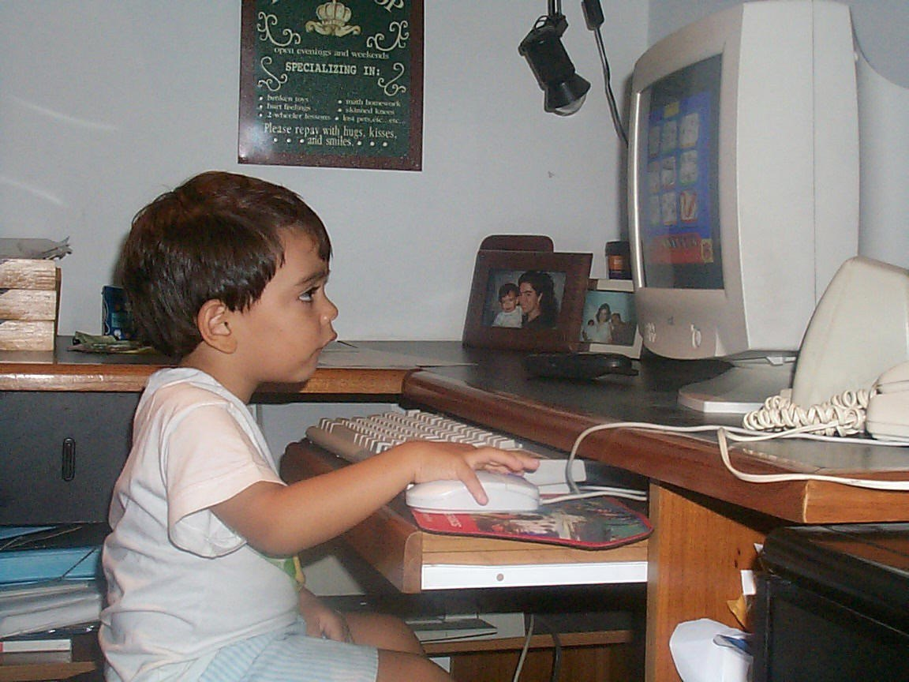
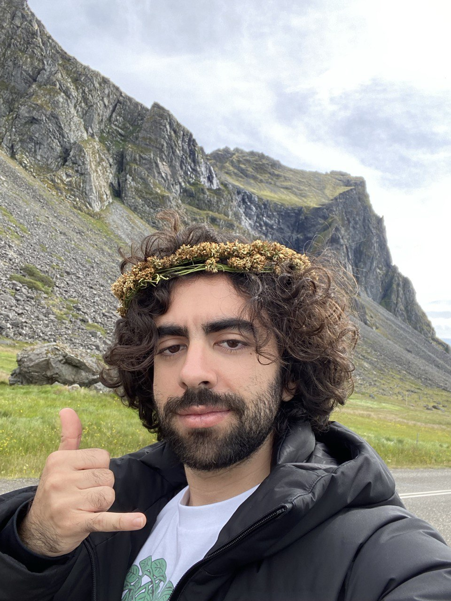

home
about me
some things i made
- abigail
- a machine to devour us all
- pigeon lady
- this journey
- you, the memorious
- the king of wands
- the reversed queen of wands
- ode to american football
- spencer (from the hit 2007 nickelodeon teen sitcom icarly)'s ultimate rat race!
- portrait of a detestable beast
- scratch
- garden at crab nebula
- psychopomp
- and i dreamt we were dancing in a maze
my itch page
my bluesky
my email
I like to make games that are pretty, melancholic, odd, and funny. I am also interested in creating complex procedural systems and on how those systems can tell stories. Although my background is in programming, I also write, draw and design for my games.
My favorite videogame is Blaseball and my favorite artist is Joanna Newsom. I enjoy horror movies, crossword puzzles, staring wistfully into the ocean and food from back home.

